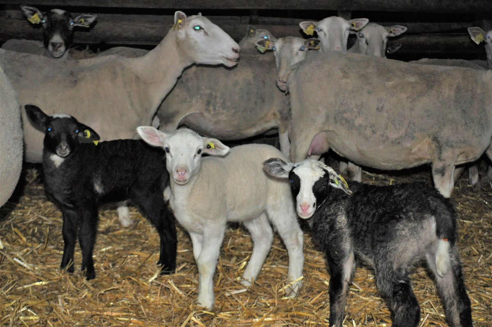
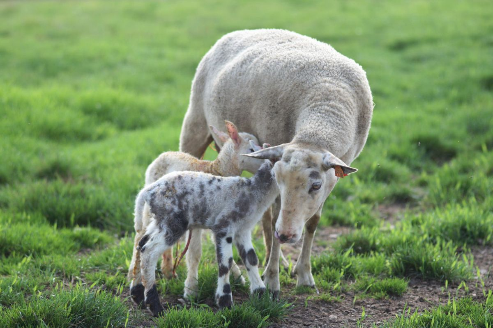

Une race aux multiples qualités
Ce que la Romane apporte à l'éleveur et à la filière
Au fil des années, la Romane a cumulé le meilleur de ses deux races d'origine.
Une grande facilité d'élevage
Grâce à de formidables qualités maternelles :
- Un instinct maternel très développé (facilité d'agnelage, adoption facile, peu d'interventions…).
- Une capacité laitière en phase avec la prolificité, qui permet de nourrir correctement 2 agneaux par brebis, et 3 pour les meilleures d'entre elles.
- Une aptitude naturelle au dessaisonnement, qui permet une production d'agneaux étalée sur l'année, sans utilisation d'hormones.
- Une grande capacité d'adaptation à tous les systèmes de production et à toutes les régions.


Une forte productivité
Prolificité moyenne de 2,2 agneaux par agnelage (variable selon la saison), avec plus de 1,8 agneau vendu ou gardé par brebis et par an, et jusqu'à 2,5 en système accéléré.
Les agneaux sont vifs : ils se lèvent très vite et prennent bien le colostrum. Une petite journée d'observation en case suffit pour s'assurer que tout se passe bien.
La rusticité
On retrouve la Romane dans toutes les régions de France, du nord des Pays-Bas au sud du Portugal, ainsi qu'en Espagne et en Suisse. Elle s'adapte à tous types d'élevages, des plus pâturants aux systèmes bergerie, transhumance… Son implantation n'est pas limitée.
Elle répond aux besoins de chacun
Des éleveurs
Des animaux rentables, faciles à élever, productifs, qui s'adaptent à tous les systèmes.
De la filière viande
Des animaux de bonne qualité, produits tout au long de l'année. Elle s'utilise en pur comme en croisement terminal avec une race bouchère.
De la transition agroécologique
Grâce à sa grande rusticité et sa grande capacité d'adaptation. Le schéma génétique intègre ces nouvelles attentes : résistance aux parasites, efficacité alimentaire…
En chiffres
Données du contrôle de performance 2023, avec 1 agnelage par an. Pour un troupeau de 300 brebis, la Romane représente entre 55 et 138 agneaux vendus de plus que les grandes races allaitantes françaises.
| Race | Agneaux / brebis / an | Différence avec la Romane | Agneaux pour 300 brebis / an |
|---|---|---|---|
| Romane | 1,83 | — | — |
| Lacaune (Ovitest) | 1,69 | 0,14 | − 42 |
| Île de France | 1,53 | 0,30 | − 90 |
| Grivette | 1,57 | 0,26 | − 78 |
| Noire du Velay | 1,42 | 0,41 | − 123 |
| BMC | 1,40 | 0,43 | − 129 |
agneaux par brebis et par an en 3 agnelages en 2 ans (jusqu'à 2,5 dans les meilleurs troupeaux)
des agnelages nécessitent une intervention
de fertilité possible sur des agnelages d'automne, avec une prolificité autour de 2
de marge brute par EMP chez les meilleurs sélectionneurs (avec aides spécifiques)
Fiche de présentation de la race RomaneAvec comparatif aux autres races760 KoTélécharger